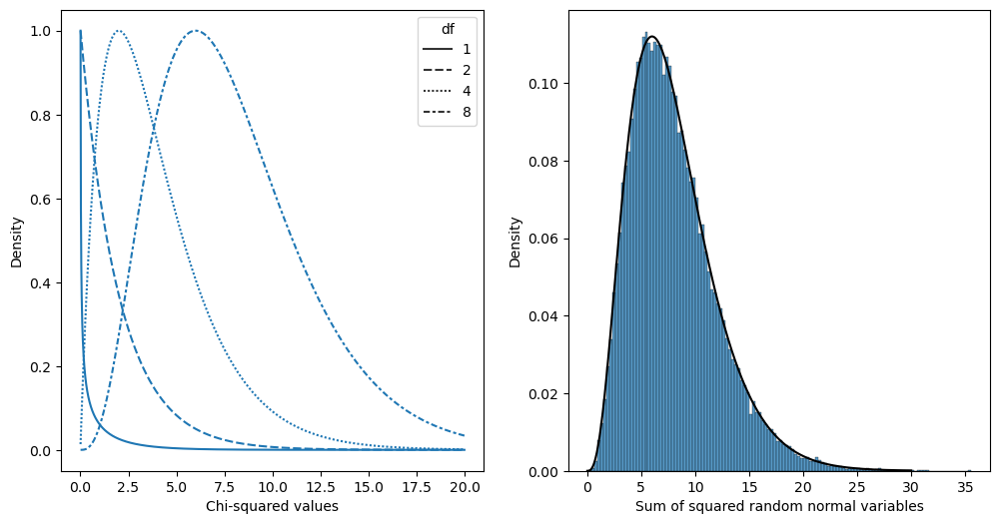

Chapter 12: Modeling categorical relationships
Contents
Chapter 12: Modeling categorical relationships#
import pandas as pd
import sidetable
import numpy as np
import matplotlib.pyplot as plt
import seaborn as sns
from scipy.stats import norm, t, binom, chi2
import pingouin as pg
import matplotlib
import rpy2.robjects as ro
from rpy2.robjects.packages import importr
from rpy2.robjects import pandas2ri
pandas2ri.activate()
from rpy2.robjects.conversion import localconverter
%load_ext rpy2.ipython
# import NHANES package
base = importr('NHANES')
with localconverter(ro.default_converter + pandas2ri.converter):
NHANES = ro.conversion.rpy2py(ro.r['NHANES'])
NHANES = NHANES.drop_duplicates(subset='ID')
NHANES_adult = NHANES.dropna(subset=['Weight']).query('Age > 17 and BPSysAve > 0')
rng = np.random.default_rng(123456)
Table 12.1#
candyDf = pd.DataFrame({'Candy Type': ["chocolate", "licorice", "gumball"],
'Count': [30, 33, 37]})
candyDf['nullExpectation'] = [candyDf.Count.sum() / 3] * 3
candyDf['squaredDifference'] = (candyDf.Count - candyDf.nullExpectation) ** 2
candyDf
| Candy Type | Count | nullExpectation | squaredDifference | |
|---|---|---|---|---|
| 0 | chocolate | 30 | 33.333333 | 11.111111 |
| 1 | licorice | 33 | 33.333333 | 0.111111 |
| 2 | gumball | 37 | 33.333333 | 13.444444 |
Figure 12.1#
chisqVal = np.sum(candyDf.squaredDifference / candyDf.nullExpectation)
chisqVal
0.7399999999999999
x = np.arange(0.01, 20, .01)
dfvals = [1, 2, 4, 8]
x_df = [(i, j) for i in x for j in dfvals]
chisqDf = pd.DataFrame(x_df, columns = ['x', 'df'])
chisqDf['chisq'] = chi2.pdf(chisqDf.x, chisqDf.df)
for df in dfvals:
chisqDf.loc[chisqDf.df == df, 'chisq'] = chisqDf[chisqDf.df == df]['chisq'] / chisqDf[chisqDf.df == df]['chisq'].max()
fig, ax = plt.subplots(1, 2, figsize=(12,6))
sns.lineplot(data=chisqDf, x='x', y='chisq', style='df', ax=ax[0])
ax[0].set_xlabel("Chi-squared values")
ax[0].set_ylabel('Density')
# simulate 50,000 sums of 8 standard normal random variables and compare
# to theoretical chi-squared distribution
# create a matrix with 50k columns of 8 rows of squared normal random variables
dSum = (rng.normal(size=(50000, 8)) ** 2).sum(axis=1)
sns.histplot(dSum, ax=ax[1], stat='density')
ax[1].set_ylabel("Density")
ax[1].set_xlabel("Sum of squared random normal variables")
csDf = pd.DataFrame({'x': np.arange(0.01, 30, 0.01)})
csDf['chisq'] = chi2.pdf(csDf.x, 8)
_ =sns.lineplot(data=csDf, x='x', y='chisq', ax=ax[1], color='black')

Table 12.2#
stopData = pd.read_csv('https://raw.githubusercontent.com/statsthinking21/statsthinking21-figures-data/main/CT_data_cleaned.csv')
table = pd.crosstab(stopData['driver_race'], stopData['search_conducted'], margins=True)
print(table)
n = stopData.shape[0]
print('')
print('Normalized:')
table_normalized = pd.crosstab(stopData['driver_race'], stopData['search_conducted'], margins=True, normalize='all')
print(table_normalized)
search_conducted False True All
driver_race
Black 36244 1219 37463
White 239241 3108 242349
All 275485 4327 279812
Normalized:
search_conducted False True All
driver_race
Black 0.129530 0.004356 0.133886
White 0.855006 0.011107 0.866114
All 0.984536 0.015464 1.000000
Chi-squared test result#
expected = np.outer(table_normalized.values[:2, 2], table_normalized.values[2, :2]) * n
actual = pd.crosstab(stopData['driver_race'], stopData['search_conducted'], margins=False)
diff = expected - actual
stdSqDiff = diff **2 / expected
chisq = stdSqDiff.sum().sum()
pval = chi2.pdf(chisq, 1)
pval
1.9001204194035138e-182
_, _, stats = pg.chi2_independence(stopData, 'driver_race', 'search_conducted')
stats[stats.test=='pearson']
| test | lambda | chi2 | dof | pval | cramer | power | |
|---|---|---|---|---|---|---|---|
| 0 | pearson | 1.0 | 827.005515 | 1.0 | 7.255988e-182 | 0.054365 | 1.0 |
Table 12.3#
summaryDfResids = diff/ np.sqrt(expected)
summaryDfResids
| search_conducted | False | True |
|---|---|---|
| driver_race | ||
| Black | 3.330746 | -26.576456 |
| White | -1.309550 | 10.449072 |
Bayes factor#
%%R -i actual
# compute Bayes factor
# using independent multinomial sampling plan in which row totals (driver race)
# are fixed
library(BayesFactor)
bf <-
contingencyTableBF(as.matrix(actual),
sampleType = "indepMulti",
fixedMargin = "cols"
)
bf
R[write to console]: Loading required package: coda
R[write to console]: Loading required package: Matrix
R[write to console]: ************
Welcome to BayesFactor 0.9.12-4.4. If you have questions, please contact Richard Morey (richarddmorey@gmail.com).
Type BFManual() to open the manual.
************
Bayes factor analysis
--------------
[1] Non-indep. (a=1)
:
1.753219e+142
±
0
%
Against denominator:
Null, independence, a = 1
---
Bayes factor type:
BFcontingencyTable
,
independent multinomial
Table 12.4#
NHANES_sleep = NHANES.query('Age > 17').dropna(subset=['SleepTrouble', 'Depressed'])
depressedSleepTrouble = pd.crosstab( NHANES_sleep.Depressed, NHANES_sleep.SleepTrouble)
depressedSleepTrouble
| SleepTrouble | No | Yes |
|---|---|---|
| Depressed | ||
| None | 2631 | 678 |
| Several | 423 | 254 |
| Most | 140 | 146 |
Chi-squared result#
_, _, stats = pg.chi2_independence(NHANES_sleep, 'SleepTrouble', 'Depressed')
stats[stats.test=='pearson']
| test | lambda | chi2 | dof | pval | cramer | power | |
|---|---|---|---|---|---|---|---|
| 0 | pearson | 1.0 | 194.653393 | 2.0 | 5.389552e-43 | 0.213459 | 1.0 |
Bayes factor#
%%R -i depressedSleepTrouble
# compute bayes factor, using a joint multinomial sampling plan
bf <-
contingencyTableBF(
as.matrix(depressedSleepTrouble),
sampleType = "jointMulti"
)
bf
Bayes factor analysis
--------------
[1] Non-indep. (a=1)
:
8.541445e+35
±
0
%
Against denominator:
Null, independence, a = 1
---
Bayes factor type:
BFcontingencyTable
,
joint multinomial